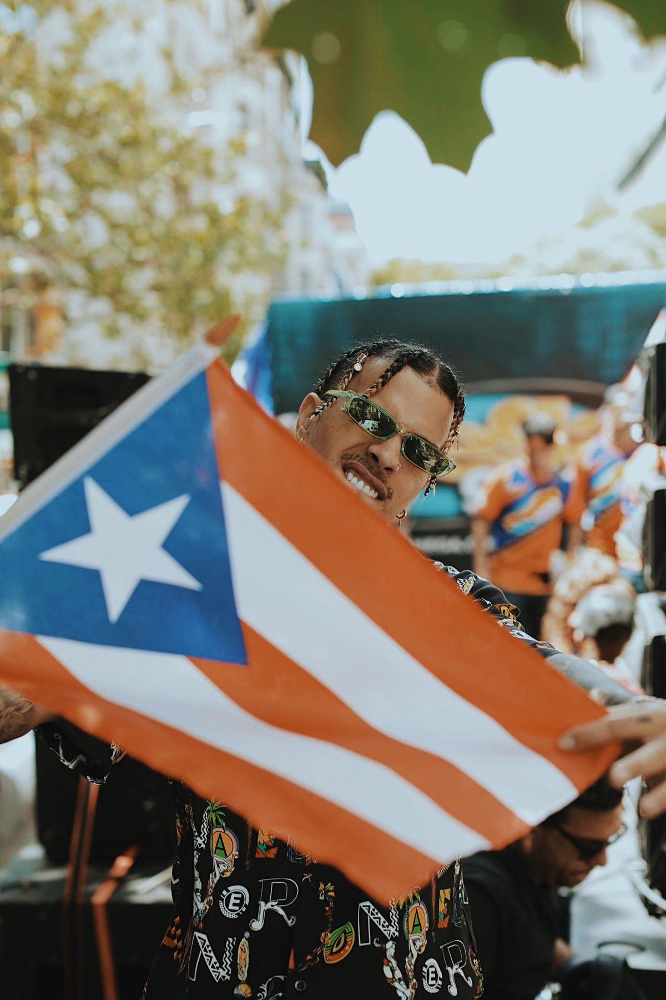
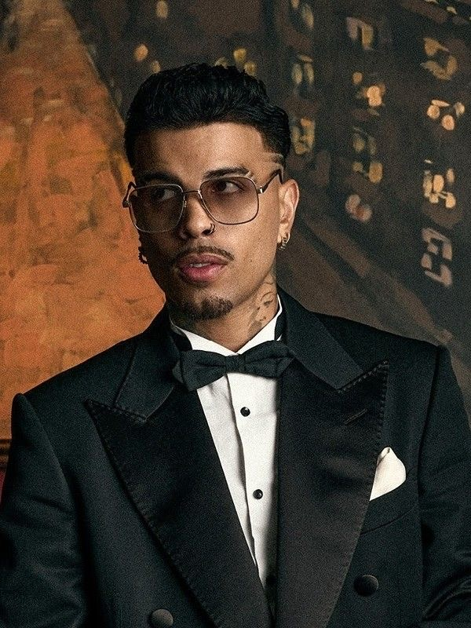

Raúl Alejandro Ocasio Ruiz, conocido artísticamente como Rauw Alejandro, es un cantautor, bailarín, actor, productor y empresario puertorriqueño. Nació el 10 de enero de 1993 en San Juan, Puerto Rico.

Hijo de Raúl Ocasio, guitarrista, y María Nelly Ruiz, corista, sus padres se divorciaron cuando él tenía diez años. Creció junto a su abuela, su hermana y su madre, quien trabajaba en tres empleos para mantenerlos. Esta experiencia familiar, marcada por el esfuerzo, le inculcó una fuerte ética de trabajo y la creencia de que "nadie le ha regalado nada".
Desde los seis hasta los veinte años, Rauw Alejandro se dedicó al **fútbol**, incluso llegando a la Universidad de Puerto Rico con una beca y trasladándose a Orlando, Florida, con la intención de ser reclutado para la Premier Development League (PDL). Sin embargo, una lesión y la incapacidad de alcanzar el rendimiento esperado lo llevaron a dejar el deporte, lo que lo sumió en una ligera depresión. Después de considerar brevemente la actuación, se dedicó a la música, comenzando a publicar canciones en SoundCloud en 2014. Antes de su éxito, Rauw tuvo varios empleos, incluyendo camarero, barman, jardinero y dependiente en tiendas de ropa y zapatos.

Rauw Alejandro pertenece a la "nueva generación" de artistas puertorriqueños y se ha distinguido por su **fusión única de reggaetón, R&B y pop**. Sus influencias musicales incluyen a Elvis Presley, Michael Jackson, James Brown, Ricky Martin, Daddy Yankee, Chris Brown y Ciara. Es conocido por su estilo experimental y por empujar los límites del reggaetón, incorporando elementos de la música disco y los años ochenta en sus producciones.
Su álbum de estudio debut, "Afrodisíaco", lanzado en 2020, le valió una nominación al Mejor Álbum de Música Urbana en los Premios Grammy. Su segundo álbum, "Vice Versa" (2021), incluyó el exitoso sencillo "Todo de Ti", una canción con ritmos disco que se convirtió en un éxito mundial. Otros álbumes notables incluyen "Trap Cake, Vol. 1" (2019), "Trap Cake, Vol. 2" (2022), "Saturno" (2022), "Playa Saturno" (2023) y "Cosa Nuestra" (2024).
Algunas de sus canciones más reconocidas son:
A lo largo de su carrera, Rauw Alejandro ha lanzado una serie de álbumes que han definido su sonido y su impacto en la música urbana. Aquí puedes ver algunas de sus portadas más icónicas:
Su álbum de estudio debut, "Afrodisíaco", fue lanzado en 2020 y le valió una nominación al Mejor Álbum de Música Urbana en los Premios Grammy. Su segundo álbum, "Vice Versa" (2021), incluyó el exitoso sencillo "Todo de Ti", una canción con ritmos disco que se convirtió en un éxito mundial. Otros álbumes incluyen "Trap Cake, Vol. 1" (2019), "Trap Cake, Vol. 2" (2022), "Playa Saturno" (2023) y "Cosa Nuestra" (2024).
Es difícil determinar la cifra exacta de sus ganancias, pero se estima que sus ingresos son muy significativos y provienen de diversas fuentes:
Rauw Alejandro ha recibido numerosos premios y nominaciones, consolidando su posición en la industria musical. Algunos de los más destacados incluyen:
La fama de Rauw Alejandro es global. Se le considera uno de los artistas latinos más influyentes de su generación.
Su pasión por el baile es un pilar fundamental de su arte. A diferencia de muchos artistas urbanos, Rauw Alejandro es conocido por sus **elaboradas coreografías y su impactante presencia escénica**.
Las letras de Rauw Alejandro ofrecen una ventana a su mundo interior y su visión artística más allá de la música.
Rauw Alejandro ha estado involucrado en algunas polémicas, aunque su carrera ha sido más destacada por su música que por los escándalos:
Raúl Alejandro Ocasio Ruiz es mucho más que un ícono de la música urbana. Su vida personal, marcada por la perseverancia, los valores familiares y una amplia gama de intereses, ofrece una mirada profunda al hombre detrás del éxito.
Nacido el 10 de enero de 1993 en San Juan, Puerto Rico, Rauw experimentó una infancia forjada en el esfuerzo. Sus padres se divorciaron cuando él tenía solo diez años. A partir de entonces, su crianza recayó principalmente en su madre, su abuela y su hermana, figuras femeninas fuertes que lo moldearon. Su madre, a quien describe con profundo respeto, trabajó incansablemente en tres empleos para asegurar el bienestar de la familia. Esta dedicación y sacrificio inculcaron en un joven Rauw una feroz ética de trabajo y la convicción de que "nadie le ha regalado nada", un lema que lo acompaña hasta hoy. Aunque el divorcio marcó su niñez, la música siempre fue un hilo conductor en su hogar; su padre era guitarrista y su madre corista, exponiéndolo al arte desde una edad temprana y sembrando las semillas de su futura vocación.
Antes de los escenarios, el **fútbol** fue su gran pasión. Desde los seis hasta los veinte años, Rauw dedicó su vida al deporte, incluso llegando a obtener una beca universitaria en la Universidad de Puerto Rico y trasladándose a Orlando, Florida, con la esperanza de una carrera profesional. Sin embargo, una lesión truncó ese sueño, sumiéndolo en una breve depresión. Pero este revés, lejos de detenerlo, lo impulsó a explorar nuevas avenidas. Tras considerar brevemente la actuación, encontró su verdadero llamado en la música, comenzando a compartir sus creaciones en SoundCloud en 2014. Esta transición del campo a la composición y el baile no solo demuestra su versatilidad, sino también su **resiliencia y capacidad de adaptación**.
A pesar de la vorágine de la fama mundial, Rauw Alejandro se mantiene firmemente arraigado a sus valores. Valora la **humildad** y se apoya incondicionalmente en su círculo de amigos de toda la vida, a quienes cariñosamente llama su **"mejor terapia"**. Estas amistades son su refugio, un recordatorio constante de su esencia más allá del personaje público. Su conexión con Puerto Rico también es inquebrantable; a pesar de sus viajes globales, la isla sigue siendo su hogar y una fuente constante de inspiración, a la que regresa para recargar energías y fortalecer sus raíces.
La relación más publicitada de Rauw ha sido con la cantante española **Rosalía**. Su romance, que comenzó a finales de 2019 y se hizo público en septiembre de 2021, cautivó a sus fans en todo el mundo. La pareja incluso anunció su compromiso en marzo de 2023, compartiendo el momento con sus seguidores a través del videoclip de su colaboración "Beso". Sin embargo, para sorpresa de muchos, la relación llegó a su fin en julio de 2023. Rauw abordó públicamente la ruptura, negando enfáticamente los rumores de infidelidad y pidiendo respeto por la privacidad de ambos. Su dolor y vulnerabilidad se manifestaron en la emotiva canción "Hayami Hana", dedicada a Rosalía. Antes de este mediático romance, un detalle curioso de su infancia es que su amor platónico era la actriz colombiana Carmen Villalobos.
La creatividad de Rauw Alejandro no se limita a las ondas sonoras. Es un **amante y coleccionista de arte**, con una particular afinidad por las obras locales puertorriqueñas. Su admiración por artistas como Picasso y Basquiat revela una sensibilidad artística profunda y una visión más allá de su propio medio. Además, ha expresado interés en la **arquitectura**, lo que sugiere una mente que aprecia el diseño y la estructura. Su inquietud social también es evidente, pues ha manifestado un deseo de involucrarse en el **activismo humanitario y ambiental**, mostrando una conciencia del mundo que lo rodea. Y, como "Sensei" de sus propios videoclips, demuestra un control creativo meticuloso y una visión integral de su obra visual, involucrándose activamente en la dirección y la narrativa.
La vida personal de Rauw Alejandro es un testimonio de cómo las experiencias de la infancia, las pasiones diversas y un fuerte sistema de apoyo pueden forjar a un artista auténtico y multifacético, que continúa evolucionando y conectando con su público a un nivel más profundo.
